Getting started
-
Open or start a song
The menu's Songs… loads one of the bundled examples, one of your own saved songs, or starts a new one — either with the empty Lead/Harmony/Bass/Pad/Rhythm starter tracks or a blank project (just a Rhythm track). Your own songs are saved in this browser, nothing is uploaded anywhere.
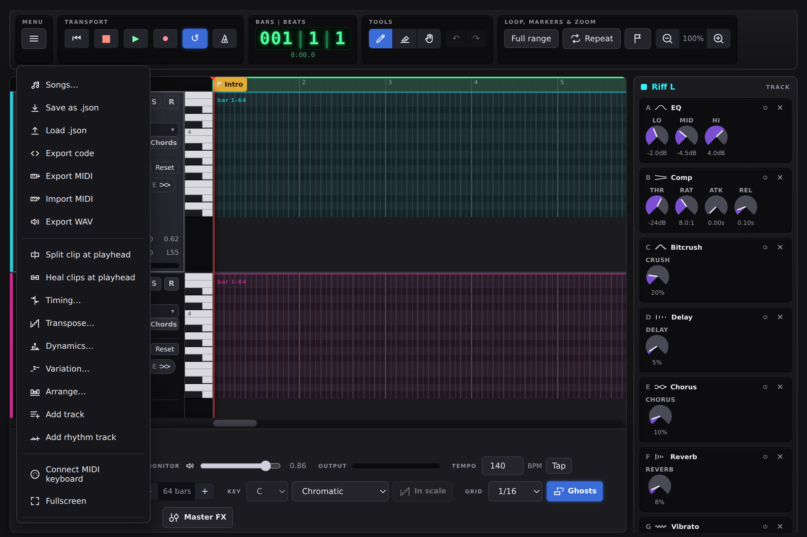
The menu — Songs…, Save/Load, and every export in one place. -
Add and shape a track
Add track / Add rhythm track in the menu add a new lane. Pick a waveform (or a kit, for rhythm) from the Osc picker, then open Env to shape its ADSR envelope and filter — this is where a plain saw becomes a pad or a lead.
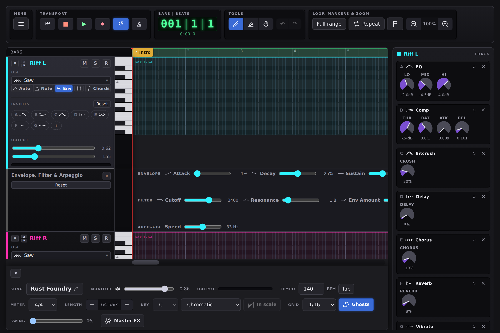
A track's Env panel — ADSR, filter, and (here, since the track uses Saw) an arpeggio speed control. -
Place notes
With the Pen tool, click an empty cell in the grid to add a note or drum hit. The left edge of a tonal track is a playable piano keyboard — press a key to hear it before you commit to writing it. Rhythm tracks have a Patterns button that stamps in a whole built-in groove at once.
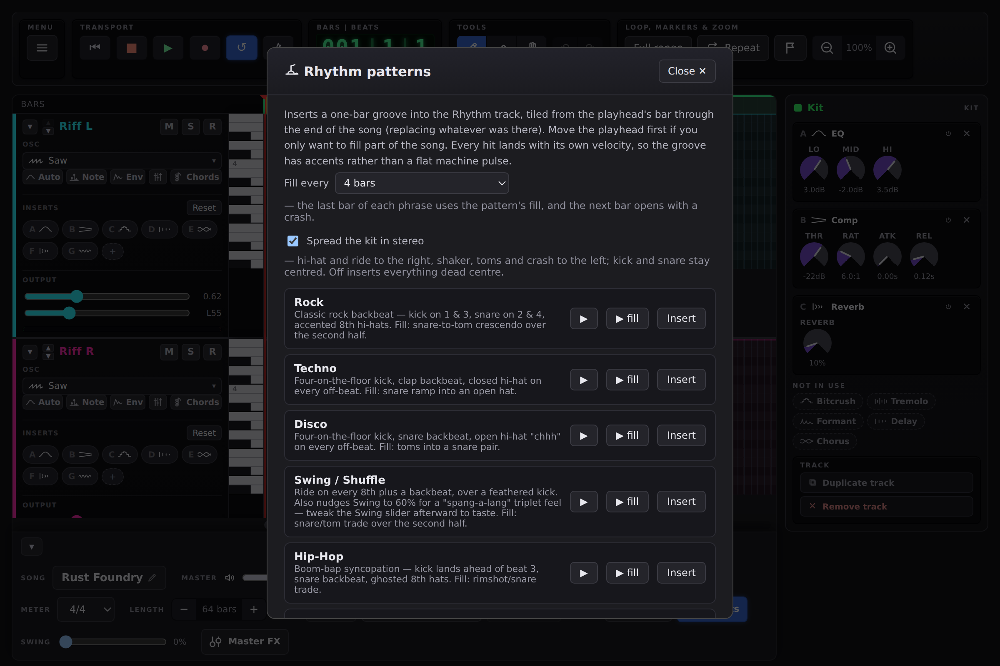
The Patterns dialog — a full built-in groove, one click, accents and a fill included. -
Add effects
Click a note or hit to open it in the inspector on the right — bend, vibrato, arpeggio, echo, chorus and more live there per note. A track's own effect chain (EQ, compressor, delay/chorus/reverb sends, bitcrush, tremolo) shows in that same column whenever nothing is selected — click any Insert chip on a track to see its whole chain.
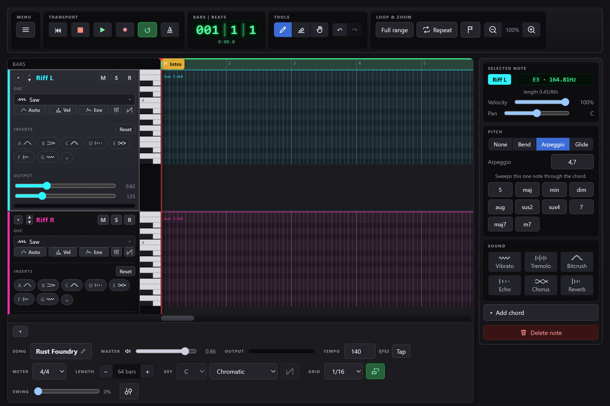
A selected note in the inspector — every per-note effect in one place. -
Save, export and share
Save as .json keeps a working copy you can reload later; Songs… also saves to this browser. When a song is finished, Export WAV gives you an audio file and Export MIDI takes the notes to another program; Export code writes the notes as JavaScript for a game (see Saving & exporting). This page and the editor both install as a PWA and work offline — including a phone-sized player for just listening back.
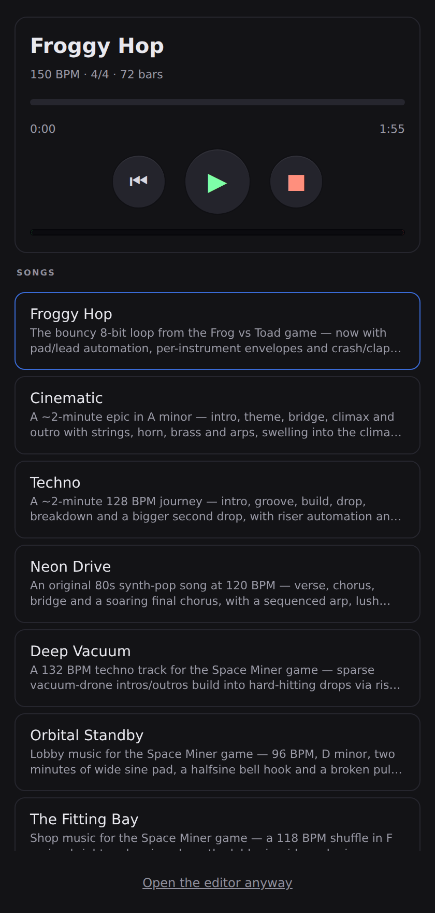
Below 760px the editor becomes a player — for listening, not composing.
From idea to song
The five steps above show where things are. This is how they fit together: one way from an empty project to a finished arrangement, in the order the tools were built to be used. Every step writes real notes you can edit afterwards, so nothing here locks you in — and every one of them is one Undo away. Start from the menu's Songs… → Starter tracks: Lead, Harmony, Bass, Pad and a kit.
-
Pick a key and a tempo
In the bottom bar, set Key to a tonic and a scale — C Major or A Minor are good first choices. The piano roll now shades every row outside the scale, so you can see the notes that will sound wrong before you play them. Nothing is forbidden; the shading is a map, not a fence.
For the tempo, you don't need to know a number. Tap the Tap button beside the tempo in time with the song in your head — four taps or more — and the tempo follows you. Stop for two seconds to start counting again. It also works while the song plays, if you want to tap along to what you hear.
Try Tap along to something you know, then compare the number with what it says it is.
-
Lay down the chords
On the Harmony track, press the Chords button (the staircase icon in its header). Pick a progression — I–V–vi–IV is behind a huge number of songs — press ▶ to hear it on the track's own sound, then Insert. You get one chord per bar, from the playhead to the end.
The progression is stored as steps of the scale, not as fixed chords, which is why the same one comes out bright in a major key and dark in a minor one. Change the key and insert again to hear it.
Listen for the pull back to the first chord every four bars. That is what "home" sounds like in this key.
-
Let the bass follow the chords
Now press Chords on the Bass track and scroll down to Follow another track's chords. It has already picked Harmony, the track with chords in it. Choose a figure and press Insert: Roots holds the root of each chord, Root–fifth bounces between root and fifth, Octaves is a disco bass. The same list has arpeggios, for a Lead or Pad that should spell the chords out one note at a time.
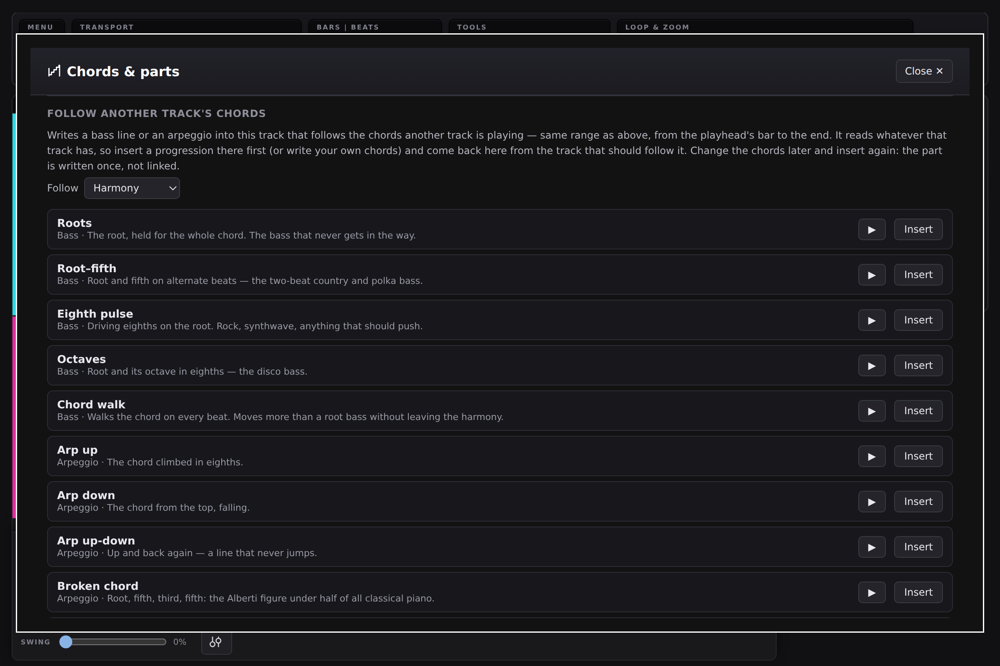
Opened from the Bass track: follow Harmony, pick a figure. It reads the chords that are actually sounding on the other track — so it works just as well on chords you wrote yourself, inversions and chords from outside the key included. The part is written once, not linked: if you change the chords later, insert the bass again.
Try Insert Roots, listen, then insert Root–fifth over it. Each insert replaces the last.
-
Write the melody over the chords
Click the Lead track to make it active. The notes of every other tonal track now show in its piano roll as faint, dashed ghost notes, each in its own track's colour. They can't be clicked — a click on one puts a note on the Lead, at that pitch — so they are a guide, not an obstacle.
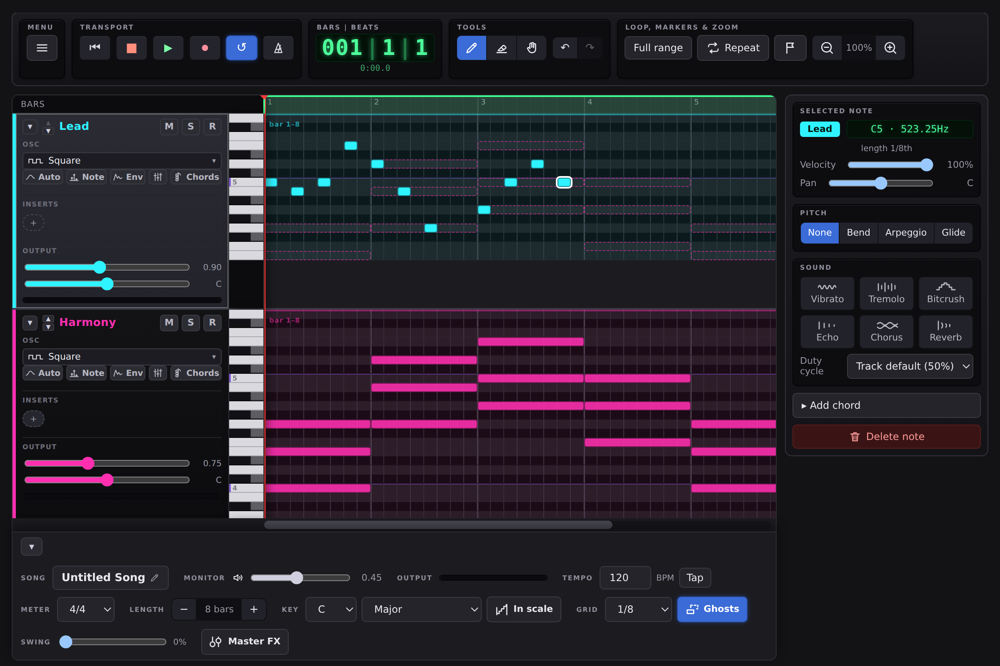
The Lead's melody over the Harmony chords, drawn as dashed ghost notes. The simplest melody that always works: on each chord change, land on a note that is in the ghost chord under it, and move by step in between. Turn on Keep to scale (beside the Key) and the notes you place with the mouse snap into the key for you.
Listen for the difference between a note that sits in the chord (settled) and one beside it (tension that wants to move). Both are useful; the ghosts show you which is which.
-
Add a beat — then a layer on top
On the Rhythm track press Patterns and insert a groove: every hit has its own velocity, and every fourth bar is a fill that hands over to a crash. Then scroll down to Euclidean layer. Pick a kit piece, say how many Hits over how many Steps, and the hits are spread as evenly as they will go. The buttons are famous rhythms: Tresillo is three over eight, the pulse under half of pop and most of Latin music.
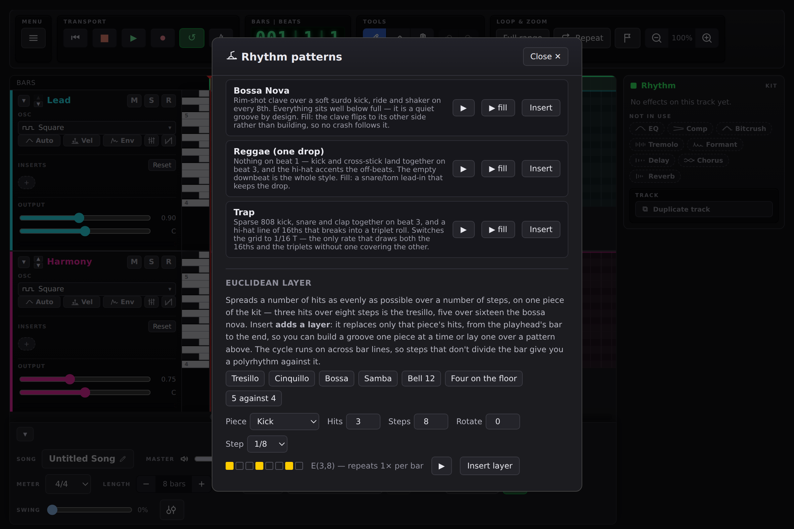
The euclidean layer on the tresillo: three hits over eight steps, drawn as the boxes you'll hear. Insert layer replaces only that piece, so you can build a groove one piece at a time — the pattern's kick and snare stay, and your tom figure plays over them.
Try Steps that don't divide the bar — 5 against 4 — and the figure drifts across the bar line and comes back. That is a polyrhythm, and it is two numbers.
-
Name the parts of the song
Move the playhead to where the chorus should start and press the flag button by the transport. Click the new flag and name it — Chorus. Do the same for Intro, Verse, Bridge. These markers are the song's sections: each one runs from its marker's bar to the next marker.
-
Make the repeat different
A verse that comes back note for note sounds like a loop. Select the notes of the second verse (drag a box with the Grab tool) and open Variation… in the menu. Each button changes a share of the notes — Amount — and leaves the rest alone:
- Neighbour tones moves a note one step up or down, inside the key.
- Octave jumps moves one an octave, which changes the line's shape and nothing else.
- Thin out leaves notes out but never the one on a bar's downbeat, so the part still lands where it did. It works on drums too.
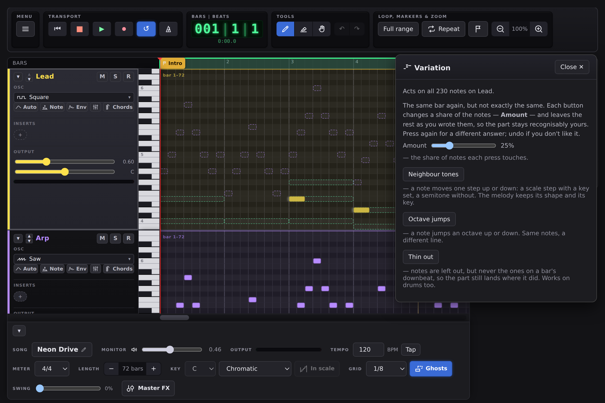
Variation — the same part, not exactly the same. Try 25% neighbour tones, listen, and press again if you don't like it — every press is a new answer, and Undo takes it back.
-
Arrange the song
Open Arrange… in the menu. It lists your sections, and each one can be Duplicated (the copy goes straight after it and everything later moves along), copied to the end, deleted, or Moved after another section in one step. At the top, Insert empty bars and Delete bars open or close time across the whole song — every track, its automation and the markers move together, so nothing is left behind.
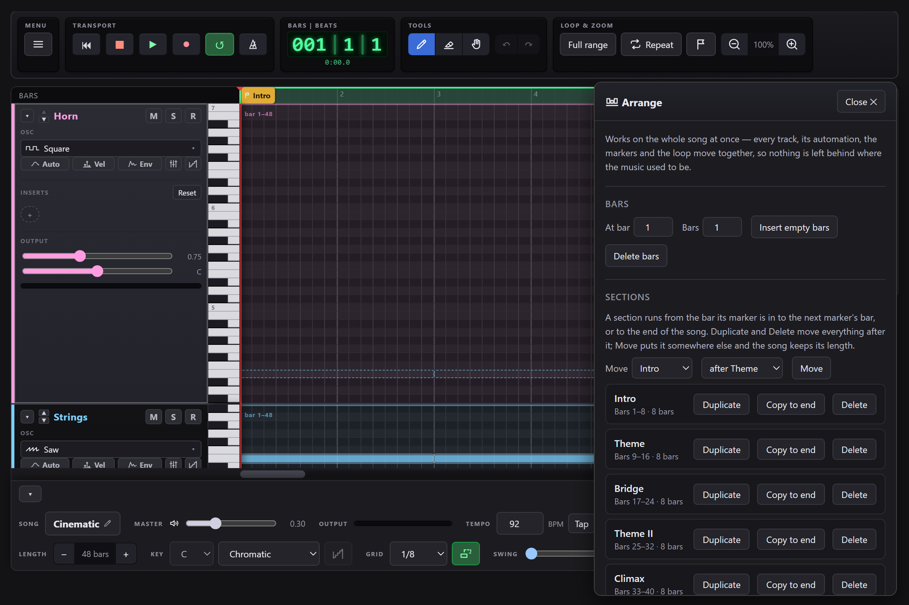
The Arrange dialog on the Cinematic example — six sections, one row each. A typical shape to build towards: Intro – Verse – Chorus – Verse – Chorus – Bridge – Chorus – Chorus. Duplicate the chorus, duplicate the verse, and use Variation on the second copy of each.
Listen for the song as a whole now: where it builds, where it rests. One empty bar before the last chorus (Insert empty bars) is often all a song needs to land.
Overview
A browser tool for composing songs — from a loop to a full arrangement — with synthesised instruments — everything is synthesised with the Web Audio API, no audio files. Instruments are laid out as separate tracks stacked vertically, like a music studio (Pro Tools style). A shared timeline at the top and the red playhead run across every lane at once. The current project's name is shown in the Master strip at the bottom (click it to rename while the strip is expanded) — the menu's Songs… loads an example, one of your own saved songs, or starts a new one; your own songs are stored in this browser.
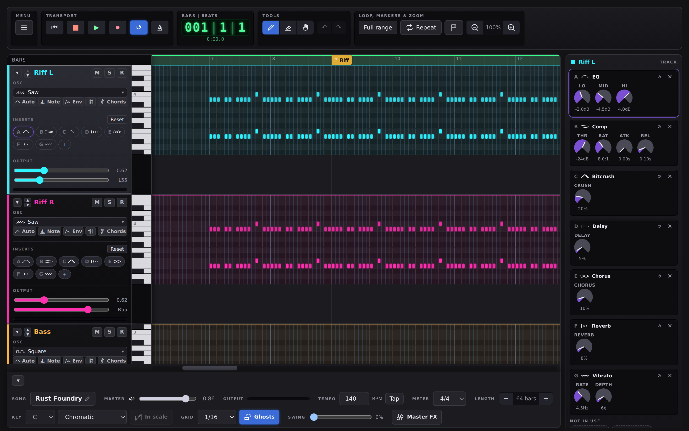
Tracks & channel strips
- Starts with a lane for each track in the loaded song (e.g. Lead, Harmony, Bass, …) plus at least one Rhythm lane with ten hit types: Kick, Snare, Rim, Hi-hat, Open hat, Shaker, Tom, Clap, Crash and Ride. Rhythm lanes always stay grouped after every tonal track.
- Each track's channel strip (left) starts with its name and Mute / Solo / record-arm, then three labelled sections: Osc (the waveform — or "Kit" for rhythm — plus the Auto/Env/Preset buttons), Inserts (the effect chips, see below) and Output (volume, pan and a level meter).
- Add track / Add rhythm track (in the menu) add a tonal or rhythm track; double-click a track's name to rename it; Duplicate track and Remove track are in the Track box at the bottom of the inspector column, for whichever track is active (the last remaining Rhythm lane has no Remove). Added tracks export into the game too.
- The ▾/▸ button on a track collapses it to a slim strip — name, Mute/Solo and the level meter stay visible, everything else (waveform, automation/envelope, volume/pan, the effect chips) hides along with the grid. Handy for an overview with many tracks. Remembered per browser.
- A tonal track's left edge is a piano keyboard rather than a column of note names — white and black keys, with only C labelled, by its octave. Press a key to hear it, and drag down the keys to glissando; it sounds through the track's own instrument, so what you hear is what writing a note there would give you. A rhythm track keeps its ten piece names, since a drum has no pitch to show.
- A tonal lane shows only the octaves around the notes it holds, so a new track starts at about one octave. To reach higher or lower, scroll the mouse wheel over the active track's keyboard or lane — it moves the view up or down by semitones. A sideways swipe (or Shift+wheel) still scrolls the timeline.
- The waveform picker in the Osc section chooses the track's basic sound. Click it and a list drops down with each shape drawn as itself: Square, PWM, Triangle, Saw, Sine, Half sine, the NES Tri wavetable, Saw+Tri, Hard sync, Pluck, Noise, Ring, FM and Harmonics. On a rhythm track the same picker chooses the kit.
- The Vel button opens a note lane under the track: one stem per note or hit, with a diamond head you can drag. The dropdown in its header picks which value it shows — Velocity, Pan, or Bend on a tonal track. Pan and bend are signed, so they grow from a centre line rather than from the floor: a stem reads as an offset from neutral, not as a quantity. Works on rhythm tracks too — that is where accents matter most. Dragging a head to the top removes the velocity again rather than storing 100%, so a part you never touched saves exactly as it did before.
- The Auto button opens a curve editor for that track's Volume, Pan, or Delay/Chorus/Reverb send over time (pick which from the dropdown): click empty space to add a point, drag a point to move it, double-click to delete it. Without any points, the channel strip's / FX panel's slider value is used for the whole song (as before).
- The Env button opens a row under the track that shapes its sound over the length of each note:
- ADSR — Attack, Decay, Sustain, Release: how a note's volume rises and fades. Attack, Decay and Release are a percentage of each note's own length, so they scale with short and long notes; Sustain is the level it holds at.
- A resonant lowpass filter — cutoff, resonance, and an envelope amount that sweeps the cutoff with the same ADSR shape. This is where a plain saw becomes a pad or a pluck.
- Extra controls for some waveforms: FM gets ratio and depth, Ring a ratio (a small whole number rings like a bell, anything else goes metallic), and Square a Duty (pulse width) for the whole track. PWM is that pulse width sweeping back and forth through each note — the sound that makes a chip lead sing rather than sit still.
- Reset puts every control in the row back to its default.
- The Preset button saves a track's waveform and everything in its Env panel — envelope, filter, FM/ring ratio, duty, harmonics, the hard-sync sweep and the arpeggio speed — as a named preset you can reuse on any tonal track, in any song (saved in this browser).
- The Track box at the bottom of the inspector column holds the two things you do to a track as a whole. Duplicate track makes a copy of the part and the whole voice — waveform, envelope, filter, inserts, sends, kit — directly below it, independent afterwards. Remove track deletes it and its part. Both ask first.
- A rhythm track has a Kit picker in its header, the same picker a tonal track uses for its waveform: Retro (the tight, dry 8-bit kit — the default), 80s (a big gated snare, long crash, wide clap) and Acoustic-ish (lower, rounder kick and a snare with more skin in it). Same ten pieces throughout, synthesised with different numbers, so switching is instant and never touches what you've written. Each rhythm track picks its own, saved with the song.
- The Inserts section (every track, rhythm included) shows one chip per effect the track is using — a letter and an icon, so you can see what's on a track and what's bypassed at a glance. The knobs are in the inspector column on the right: click a chip and the whole chain shows there, every effect at once. + reveals an effect the track isn't using yet, Reset clears the lot. The effects: continuous Delay, Chorus and Reverb sends, a 3-band EQ, a Compressor, a Bitcrush downsampler, a Tremolo and a Formant filter (vowel shapes). Tonal tracks also get a Vibrato — pitch wobble on every note of the track.
- Two header buttons write whole parts for you: Chords on a tonal track (progressions, and bass lines or arpeggios that follow another track — see Writing with chords) and Patterns on a rhythm track (grooves and euclidean layers — see Drum grooves).
- Click a strip (or into its lane) to make it the active track that the tools edit.
- Pitch lanes auto-fit to the notes they contain, so tracks stay compact.
Writing with chords
- The Key (bottom bar) is what the rest of this section reads. With a key set, the lane shades the rows outside the scale, Keep to scale moves notes you place with the mouse into it, and the chord tools below build their chords from it. Chromatic turns all of that off.
- The Chords button on a tonal track opens Chords & parts. Its first half writes a built-in chord progression — I–V–vi–IV, Pachelbel's descent, the doo-wop turnaround, ii–V–I, the Andalusian cadence, the minor vamp or a 12-bar blues — one chord per bar, from the playhead's bar to the end, replacing what was there. A progression is stored as scale degrees, so the same one is major or minor depending on the key. ▶ plays it in the current key on the track's own sound.
- Its second half, Follow another track's chords, writes a bass line (Roots, Root–fifth, Eighth pulse, Octaves, Chord walk) or an arpeggio (up, down, up-down, broken chord, fast 7ths) built from the chords another track plays. The track to follow is pre-picked as the one holding the most chords; pick another in Follow. The figure restarts on every chord change, stays on the song's beat under a chord that arrives off it, and sits in a register of its own — around the notes the track already had, or low for a bass and middle for an arpeggio. ▶ plays the first two bars.
- How a chord is read: the notes that are sounding decide. An inversion (E-G-C) is still a C chord, and a chord from outside the key (G-B-D in C minor) is played as what it is. The key only fills in what the notes don't say — a lone root, or a root and fifth without a third.
- Both halves are written once, not linked. Change the chords and insert the part again; nothing you edited by hand is ever rewritten behind your back. If the track you follow has no chords from the playhead on, Insert says so rather than doing nothing.
- Ghost notes: every other tonal track's notes show faintly, dashed and in their own colour, in the active track's piano roll. They are only a guide — a click on one places a note on your own track — and they are left out of the other lanes so the view doesn't fill up. The button beside Grid turns them off (remembered in this browser).
- The note inspector's Chord panel adds chord tones above a selected note — with a key set, labelled by the chord the key builds there (ii, V, …).
Drum grooves
- The Patterns button (rhythm tracks) inserts a built-in groove — Rock, Techno, Disco, Swing, Hip-Hop, House, Breakbeat, Funk, Half-time, Bossa Nova, Reggae, Trap — tiled from the playhead's bar to the end of the song. Every hit carries its own velocity, so the backbeat lands full while the off-beat hats sit back. Each pattern has a fill on the last bar of each phrase — set the phrase length with Fill every — and the bar after a fill opens with a crash. Spread the kit in stereo places each piece where it sits on a real kit. ▶ plays the groove bar, ▶ fill the fill.
- Under the grooves, the Euclidean layer spreads a number of Hits as evenly as they go over a number of Steps, on one kit Piece. Rotate shifts where the cycle starts; Step is 1/8 or 1/16. The row of boxes shows the pattern, and the text beside it says whether it repeats inside a bar, spans whole bars, or drifts across the bar line.
- The preset buttons are known rhythms: Tresillo (3 over 8), Cinquillo (5 over 8), Bossa (5 over 16), Samba, the West African Bell 12, Four on the floor and 5 against 4.
- Insert layer replaces only the chosen piece's hits, from the playhead's bar to the end — so layers stack, one piece at a time, on their own or over a pattern. The cycle runs on across bar lines, which is what makes a step count that doesn't divide the bar a polyrhythm. ▶ plays two bars of the layer together with what the track already has there.
Tools
- Pen — click an empty cell to add a note/hit. Clicking a different pitch at the same time in a tonal track adds a chord tone, rather than replacing what's already there.
- Eraser — click a note/hit to remove it (or a whole selected group).
- Grab — drag a note/hit to move it; drag its right edge to change its length.
- The Grid menu sets the snap resolution: 1/4, 1/8, 1/16, or triplets (1/8 T, 1/16 T). New notes take the grid length, and moving/resizing/nudging snaps to it.
- The Grid menu also has Free — placing, dragging and resizing stop snapping and land wherever you put them (on the app's finest lattice, a sixth of an eighth). The grid still sets how long a new note is. Remembered per browser rather than saved with the song.
- Placing or selecting a note/hit plays it, so you hear the pitch or drum as you edit.
- Zoom (the −/+ buttons in the toolbar, 50–200%) makes the columns narrower or wider — zoom out to see a whole song, in to place 16ths and triplets precisely.
- Clicking a note or a drum hit opens it in the inspector on the right. A hit has Velocity (10–100%) and Pan. Velocity changes the tone as well as the level — a soft hit is darker, the way a real drum struck gently gives less of the sharp top end. Quieter notes and hits are drawn dimmer.
Shaping a part
Four menu dialogs that change notes you have already written, one axis each. All four work the same way: they act on the selection — or, with nothing selected, on the whole active track — and say which before you press anything. They open as panels beside the roll rather than over it, so you can keep one open while you select other notes, press again and listen; the line that says what it acts on follows the selection as you change it. Drag a panel by its title bar to move it, and close it with Close or Esc. Arrange opens the same way. Every one of them is a single Undo.
- Timing (time) quantizes or humanizes the selection — or the whole active track when nothing is selected. The point is the Strength slider: 100% lands every note dead on the grid, while 50% moves it halfway, which tightens a take without flattening the feel out of it. Humanize is the same operation in reverse. Recording no longer snaps as you play — a take keeps the timing you gave it, and correcting it is a separate decision you make with a strength.
- Transpose (pitch) is the same idea on the pitch axis. Semitone and Octave always work; with a Key set you also get Scale step, which moves each note to the next pitch in the key. Fit to the scale pulls everything onto the nearest scale tone. Two notes that would land on the same pitch in the same column never merge — the lower one moves and the other stays put. The arrow keys use the same walk: with Keep to scale on, ↑/↓ move by a scale step and Alt+↑/↓ stay chromatic.
- Dynamics (velocity) is the third axis. Vary is a random walk around each note's current level. Accent the beat plays the notes that land on a beat harder, read off the meter. Only velocity is touched.
- Variation is the odd one out: the other three correct a part, this one departs from it on purpose, to make a repeat different. Amount is the share of notes each press changes; the rest stay as you wrote them. Neighbour tones moves a note one step up or down (a scale step when the song has a key, a semitone without), Octave jumps moves one an octave, and Thin out leaves notes out — never one on a bar's downbeat, so the part still lands where it did. Thin out works on drums too. Every press is a new random answer; Undo takes it back.
Recording
- Click R on a track to arm it — one track at a time — and the letter keys become an instrument: ZSXDC… is the lower octave with the black keys on the row above, Q2W3… the octave up, and [/] shift the octave. On a rhythm track the same row plays the kit instead: Z is the kick through to / for the ride. Press Record and you get one bar of count-in, then everything you play is kept as you played it — not snapped to the grid; tidy it afterwards with Timing (quantize, with a strength). The Metronome button clicks on every beat, accented on the downbeat — a rehearsal aid only, never in an exported WAV.
- Overdub. Turn Loop on before you hit Record and the transport keeps going round: the count-in happens once, and each lap adds to what is already there instead of replacing it. Playing the same pitch in the same place again replaces just that note, so you can fix one hit without losing the lap it sits in.
- Step entry. With a track armed and the transport stopped, the same keys write into the song a step at a time: each one places a note at the playhead and moves it on one grid step. Keys pressed together land as a chord on one column. → leaves a rest, ← goes back, ↑/↓ move to the track above or below, Home/End jump to the start of the song or the end of this track's part, and Backspace steps back and clears what's there. Every move is spoken with the position and what's already there.
- Connect MIDI keyboard lets you play a real keyboard into the armed track — including how hard you press, which becomes the note's velocity. Monitoring, recording and step entry all work the same as from the computer keyboard. Needs a browser with Web MIDI (Chrome, Edge — not Safari).
Arranging
- Arrange… (menu) works on time itself, across the whole song. Insert empty bars opens a gap of that many bars at At bar; Delete bars removes them and closes the gap. Every track, its clips, its automation and the markers move together.
- Everything moves in whole bars, so the song always stays a whole number of bars long. A note that rings across the point where bars go in sustains through them, and an automation curve holds its value there — so inserting bars and deleting them again gives you back exactly what you had.
- Your markers are the song's sections: each runs from the bar its marker is in to the next marker's bar (or to the end). Name them after the part of the song they start. Each section can be Duplicated (the copy goes straight after it, and everything later moves on), copied to the end (Copy to end) or Deleted. A copy brings its automation and its marker with it, so a duplicated chorus is listed as a section of its own.
- Move takes a section out and puts it back in somewhere else — pick it, then where it goes (to the start, or after another section — with unmarked music ahead of your first marker, the front is before that section, so the unmarked bars stay where they are), and press Move. What lay between closes up behind it and the song keeps its length, so "the Bridge after the second chorus" is one step rather than a Duplicate and a Delete. Two sections with the same name are told apart by the bar they start on.
- Undo takes back any of these in one step, markers included.
- Repeat (by the transport) is the quick version for a loop: it stamps the loop range's notes into the bars right after it, overwriting rather than moving anything.
Clips
A track's part is held in one or more clips. A clip is not the notes — it is a window onto them: an item sounds only while it falls inside the window, so pulling an edge in hides material rather than deleting it, and pulling the edge back out brings the very same notes back. Every track starts as a single clip covering the whole song; the faint block behind each lane is it, labelled with the bars it covers (bar 1–8).
Each block is washed in its own track's colour, so a clip says which part it belongs to without your having to work it out from where it sits.
- Split clip at playhead (in the menu) cuts the active track's clip in two where the playhead sits. Nothing moves and nothing is lost. Heal clips at playhead is that run backwards, joining two halves of one clip back into a single window — only halves that came from the same clip and actually meet.
- With the Grab tool a clip grows handles: the strip along its top edge moves the whole clip along the timeline, and its left and right edges trim it.
- Moving a clip takes everything it holds, hidden material included.
- A recorded take lands as its own clip, and clears the ground it falls on the way a DAW does: whatever was there is trimmed back or split around it rather than left sounding underneath.
Selecting several notes
- Shift+click each note/hit to add or remove it from the selection (any tool).
- With Grab, drag across empty space to marquee-select everything whose start falls in the range.
- A selection moves together; Delete removes it; Ctrl/Cmd+C / V copies & pastes it at the playhead.
Note effects
Select a single note to edit vibrato, tremolo, bend, duty cycle, arpeggio, portamento, bitcrush, echo, chorus and reverb in the inspector on the right.
Two rows in the inspector offer the same ten chords — 5 (power chord), maj, min, dim, aug, sus2, sus4, 7, maj7 and m7 (hover a button for its full name). Click ▸ presets under Arpeggio or Chord to show them; they stay hidden until you ask, and each remembers whether you left it open. They differ in what you get:
- Arpeggio keeps one note and sweeps it through the chord's tones in quick succession — the classic chiptune way to imply a chord on a single voice. It fills in the Arpeggio box, which you can then edit by hand.
- Chord adds the chord's other notes as real, separate notes above the selected one, in the same track and at the same length. They start with no effects of their own, so each can be tweaked afterwards.
With a Key set (bottom bar), the Chord row is led by two more buttons: the triad and the seventh chord this key builds on the selected note. They're labelled by degree — ii, V7 — rather than by quality, because which chords belong together is exactly what a key tells you. The quality isn't written down anywhere: it's read off the scale.
Bottom bar
The strip under the tracks holds the song-wide settings. The ▾ button collapses it to a slim bar to free up space (remembered between sessions).
- Song — the project's name; click it to rename.
- Master — the overall preview volume, the Master FX button (see Mixing) and the master level meter.
- Tempo in BPM, and Tap to set it by tapping (see Transport).
- Meter — the time signature: 4/4, 3/4, 6/8 and more.
- Length — + adds a bar at the end, − removes the last one (and whatever starts in it). To add or remove bars in the middle of a song, use Arrange… (see Arranging).
- Key — the tonic and scale, and the Keep to scale button (see Writing with chords).
- Grid — the snap resolution (see Tools), and the ghost notes button beside it.
- Swing — pushes every off-beat eighth later, towards a triplet feel: 0% is straight, around 60–70% is a shuffle. It only moves notes and hits that sit exactly on the eighth-note grid, and the metronome stays straight so you have something to swing against. The Swing / Shuffle pattern sets it for you. Saved with the song.
Mixing
- Each track's volume slider sets its relative level (its
mix) — drag while playing to rebalance live. The pan slider places it left or right; double-click it to re-centre. - Mute silences a track; Solo silences every track except the soloed one(s).
- Master sets the overall preview loudness (editor only — not part of the game's audio).
- The level meters (per track and next to Master) show live output while previewing or playing.
- The Master FX button next to Master (or a click on the Master or Output cell) puts the master bus in the inspector column on the right, the same way clicking a track shows that track's effects there: a 3-band EQ, a compressor with an optional parallel-comp blend, sidechain ducking on every kick/snare hit and a lo-fi downsampler, plus a live spectrum and an approximate LUFS meter. The button also shows a row of five chips in the bottom bar, one per effect, each dimmed while its effect is doing nothing. Clicking a track takes the column back.
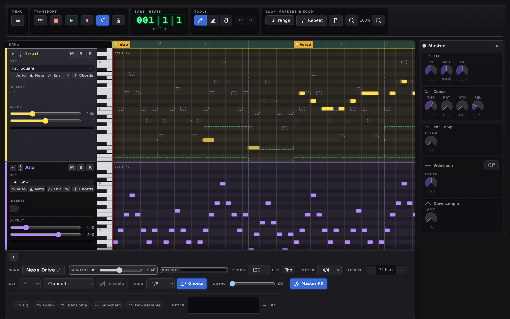
Transport & timeline
- Transport: return-to-start, stop, play, and a loop on/off toggle; the LCD shows Bars | Beats and Min:Sec.
- Click the timeline (or drag the playhead) to set where playback starts; the view auto-scrolls to follow the playhead.
- The green band is the loop range — drag its ends, or "Full range" to reset it. Repeat duplicates that range's notes/hits into the region right after it (growing the song if needed) and advances the range onto the copy, so clicking again keeps stamping it forward.
- Tap (beside the tempo) sets the tempo from your own taps: tap four or more times in time and the tempo follows the average of your recent taps. Stop for two seconds and the next tap starts a new count. It works while the song plays, too — the playback carries on from where it was, at the new tempo.
- The Meter menu (bottom bar) sets the time signature (4/4, 3/4, 6/8, …), which regroups the bar lines, numbers and Length. Note times don't move.
- The Key cell (bottom bar) sets the song's tonic and scale. Every row outside the scale is shaded in the piano roll and its key dimmed on the keyboard, and the tonic is marked. Keep to scale goes further and moves a note you place or drag with the mouse to the nearest pitch in the scale — it only affects the mouse, what you play is never corrected. Chromatic turns the whole thing off.
- The flag button adds a marker at the playhead; click a marker flag to rename it (or clear the name to delete). Markers are saved with your file but aren't part of the game.
Saving & exporting
- Songs… opens the Song library: load an example, one of your saved songs, or start a new song — named up front, either with the empty starter tracks or an empty project (just Rhythm). The project name lives in the Master strip at the bottom.
- Save as .json / Load .json keep a work-in-progress
.json— the whole song: name, tempo, meter, length, key, swing, every track with its clips, sound and effects, the mix and automation, the master bus and the markers. Work also autosaves to this browser as a crash-recovery safety net — reloading the page always starts a fresh project with the starter tracks though, never auto-restoring that draft. - Export code writes the notes as
TRACKSandRHYTHM_TRACKSJavaScript declarations, for playing the song inside a game. Only notes and hits are included — automation, envelopes, effects and markers have no place in that format. Note: the drum part is written as a list of rhythm tracks (RHYTHM_TRACKS); code written for the older singleRHYTHM_TRACKneeds updating before it can take the output as it is. - Export MIDI / Import MIDI round-trip a Standard MIDI File. Per-note effects, automation, ADSR/filter/FM and markers have no MIDI equivalent and aren't preserved.
- Export WAV renders the whole song offline at 48kHz and downloads it as a
.wavfile. - Fullscreen toggles the browser's fullscreen mode. On Android, your browser's menu also offers Add to Home screen / Install app — this page is installable and works offline once loaded, same as this guide.
Keyboard shortcuts
Shortcuts are ignored while typing in a field.
Using it without a mouse
Tab reaches every control, and the focused one is outlined in blue. From the grid, Shift+←/→ walks through the notes of the active track and Home/End jump to its first or last — each one is spoken as pitch and position ("G4, bar 1 beat 1"), so the arrow keys, Delete and the inspector all become usable from the keyboard. A skip link at the very top of the editor jumps straight to the grid.
To write notes rather than only edit the ones that exist, arm a track with its R button and use step entry (above). That also gives you a cursor you can move around the grid in both directions — ←/→ through time, ↑/↓ from track to track, Home/End to the start of the song or the end of this track's part — and every move is spoken with the position and what is already there, so you can survey a song you can't see.
About this guide
Web Audio Studio —. The app installs as a PWA and updates itself in the background, so what you are running is not always what you last loaded — this guide is versioned the same way. This is the app's own version, not the version of a saved song, which is a separate number the file carries so older songs keep opening.
This page is a standalone file — open it in its own tab and keep it there while you work in the editor.